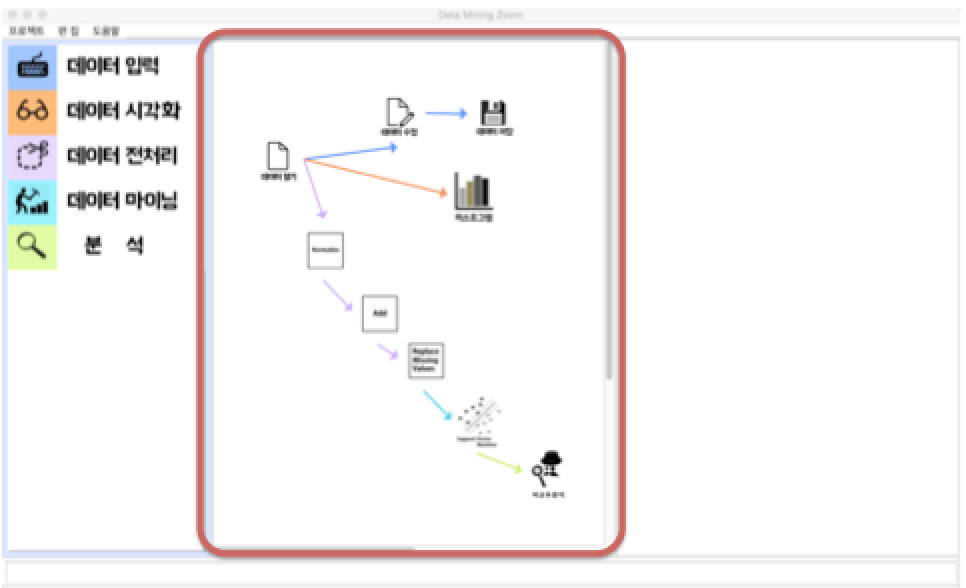

저희가 프로젝트를 진행하기 앞서 세운 세가지 목표가
있었습니다.그중 첫번째는, 누구나 쉽게 사용가능하
고,학생들이 수업시간에 사용하기 편리한 학습용
프로그램을 만들자이며 복잡하고 많은 기능 대신
간결하면서도 중요한 기능만을 삽입하여 프로그램의
완벽성을 높이면서 초보자를 대상으로 하기때문에
최대한 심플하게 사용하기 편리한 프로그램을 만들자
는것이 세가지 목표였습니다. 앞으로 소개해드릴
프로그램을 보시면서 저희가 추구 하고자 하였던
목표가 얼마나 프로그램에 잘 녹아들었는지 확인해
주시면 감사하겠습니다.
데이터마이닝분석은 보통 데이터를 입력하는것 부터 시작합니다.
입력된 데이터를 전처리 라는 과정을 통해 분석 하기
에 알맞는 데이터로 바꿔주고 이제 실제로 알고리즘을
적용하여 데이터를 분석합니다. 그리고 결과값을 시각
적으로 표현해주며, 마지막으로 새로운 정보를 발견하
게 됩니다. 이처럼 이런 모든 과정을 데이터마이닝
분석이라 합니다. DMZ는 바로 이러한 절차를 그대로
따랐습니다.
먼저 데이터 입력 부분에서는 데이터 열기와 수정,
저장 기능이 존재합니다.
데이터는 포맷은 CSV와 ARFF을 제공하여 읽기와 저장
이 가능하며, 웹상에 존재하는 데이터의 URL을 읽어
올 수도 있습니다. 데이터 수정에서는 이처럼 불러온
데이터를 가지고 수정이 가능합니다.
DMZ에서는 총 2가지의 데이터 시각화
기능을 제공합니다.
히스토그램과 산포도인데요, 이런식으로 직관적인 UI
를제공함으로써 초보자도 쉽게 이해할 수 있도록
하였습니다.
다음은 데이터 전처리 기능입니다.
데이터전처리 과정에서는 총 20개의 필터링을 제공합니다.
방금전 소개해드렸던 데이터 수정기능과
여기 데이터 전처리 기능을 통하여
강력한 데이터 전처리 기능을 수행할 수 있습니다.
다음은 가장 중요한 알고리즘 부분입니다.
DMZ에서는 알고리즘을 크게 Classification분석인 분류
알고리즘, Clustering분석 인 군집알고리즘, 그리고
association분석인 연관 알고리즘으로 나누었습니다.
그리고 분류는 5가지, 군집은 4가지 그리고 연관에는
2가지 알고리즘을 구현하였습니다. DMZ에서 제공되
는 알고리즘은 각각의 분석기법을 대표하는 알고리즘
들입니다 조금전에 기대가치에서 설명드렸다시피
DMZ는 데이터마이닝이나 빅데이터를 배우는 학생들
또는 초보자에게 초점을 맞추었기 때문에 많은
알고리즘보다는 강력하고 필수적인 알고리즘만을
선별하여 제공하고 있습니다.
마지막으로 분석이 있습니다.
분석은 분류, 군집, 연관 알고리즘을 적용 후에
마진커브나, 코스트커브등을 시각적으로 표현해주며,
뉴럴 네트워크 경우에도 시각적으로 표현을 해줌으로써
사용자들이 원하는 정보를 쉽고 정확하게 얻을 수
있도록 도움을 줍니다.
이게 바로 DMZ를 처음 실행하였을때 화면입니다.
기존의 프로젝트나 새로운 프로젝트를 만들 수 있습니다.
DMZ는 크게 세가지 패널로 구성되어 있습니다.
먼저 왼쪽 패널에는 방금전에 개별적으로 설명드렸던
데이터 마이닝 분석 절차를 직관적인 UI를 통해
구현함으로써 사용자의 편의성을 높였습니다.

그리고 가운데 있는 이 패널은 스케치라고 하는데,
왼쪽패널에서 이렇게 드레그앤 드롭방식으로 가져온
후 화살표로 서로 이어 주었습니다. 이런 방식을
WorkFlow라고 하는데 작업의 흐름을 알기쉽게
표현하여 학생들이 작업흐름을 알기쉽도록 표현하였으며.
마지막으로 오른쪽패널은 히스토그램과 같은 시각화나,
다양한 알고리즘을 적용하거나 다양한 버튼들
존재함으로써 완벽한 기능을 제공하는데 필요한
패널입니다.
 is data minning zoom
is data minning zoom